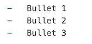
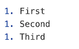

print("This is text from a chunk")[1] "This is text from a chunk"
The closer we keep our data, analyses, inferences, and interpretations, the more reliable our research becomes.
In current data analytics and communication, there are a wide variety of platforms on which we can provide summaries and insights regarding our work. Each of these end points requires a non-insignificant amount of effort to learn these systems. Moreover, they all are cul de sacs in that all the effort you exert to learn one will not allow you to get the benefits of any other platform than the one you just learned.
Enter Pandoc, the universal document converter. It is essentially the Rosetta Stone of file types. Some really smart programmers have put together a set of software that allows you to convert from or to (and hence between) different document types given that most documents are regularly structured. With Pandoc, it does not matter if you do or do not have Word or PowerPoint or EPub or LaTeX or whatever, as long as you can create one of the supported types, you can convert that input into a huge variety of output types.

This is critical for us because Code is just text. Once it is evaluated, it can replaced with:
As such, we can embed R code within raw text to create our analyses and documents.
The first step is to go to quarto and download the quarto engine for your particular computer. If you are using Positron as your IDE, it does come stock with a version of quarto already.
Quarto will serve as your interface between the text, code, analyses, graphics, tables, citations, and other items in your data analysis workflow. When we start on a analysis that has some kind of graphical output (tabular or charts or maps), more often than not, you’ll be creating a Quarto Document. In fact, this entire book is written as a sequence of Quarto Documents (as is the website it is being hosted from).
Quarto is your friend.
A quarto document is simply a text file. Since it is text, it is easily shared and future proofed against vendor lock-in and other problems. It is also a great candidate for using version control (like GitHub and similar repositories for collaboration).
A document has two parts: the meta data (known as the YAML), and the body.

The YAML is the part at the top and contains metadata relative to the whole document as well as instructions to what is going to happen when it gets turned into another document. By default, it has a title and a format saying that when this is rendered (by hitting that preview button above it), it will make a HTML document that is titled “Untitled”. For most purposes, html output is sufficient and in some cases (e.g., when deploying dynamical graphical output like maps or dashboards) preferred. You can create docx, pdf, ppt, dashboards, blogs, websites, and a host of other output from this document. Here are some rules about the YAML
key: value and if it is textual content, enclose it in quotes.Here is a YAML from a reserach manuscript I’m working on so you can see the extra stuff that can be added.
‐‐‐ title: | Directional Gene Flow: Uncovering Directionality in Population Graph Topologies format: html author: - name: Rodney J. Dyer orcid: 0000-0003-4707-3453 corresponding: true email: rjdyer@vcu.edu affiliation: - name: Virginia Commonwealth University department: School of Life Sciences and Sustainability city: Richmond state: VA url: https://slss.vcu.edu keywords: | - Asymmetric Gene Flow - Population Graphs - Directionality - Genetic Connectivity copyright: holder: Rodney J. Dyer year: 2026 bibliography: export.bib funding: | The author received no specific funding for this work. abstract: | This manuscript develops a novel approch to estimating relative directionality in genetic connetivity using a Gaussian kernel approach. Stochastic individual-based simulation models are used to determine the sensitivity of this approach to identify asymmetry in gene flow amongst a set of discrete populations showing... The methodology is applied to two case studies, one evaluating the distribution of genetic variance among spatially separated populations of X and another is applied to an analysis of pollen pool structure. Extensions of this model to answer questions in landscape and conservation genetics are discussed at the end. ‐‐‐
Notice for some things, you may need to have a list of responses and they are indented underneath the main key. See the documentation. Also, for long lines, you can use the pipe character (|) right after the key and then indent one or more lines of text underneath—I did this here for the title, keywords, fundin, and abstract so it all displayed properly on the page without needing to scroll left/right to see it all. It is not needed in your document unless you like it to not run off the side of your editor. For specifics—for most documents, you’ll only need title, name, and format.
After the YAML part, this is where your text and code goes that will be rendered and turned into the finalized document.
For maximum usability, the document that we embed our code into should be as widely available as possible—unhindered by the necessity of having a particular program just to view the content. For this, R uses Markdown, created by John Gruber & Aaron Swartz in 2004. Markdown was created so that people are enabled “…to write using an easy-to-read and easy-to-write plain text format…”
Because everything is text, it is easy share and collaborate using Markdown, and for R, it is how we can make a wide array of output document types including (but not limited to):
When we make a document, presentation, or any other output, there are only a finite set of different text components we put into the document. The document itself does not need to be heavy or bloated, it is just text (though surprisingly, a blank Word document on my laptop with nothing in the document itself is still 12KB in size!). Common elements include:
What Markdown does is allows you to type these components and use ‘marking’ around the elements to make them different from regular text. It is really, amazingly simple.
Title and headers are created by prepending a hashtag
# Header 1
## Header 2
### Header 3
#### Header 4
are converted into the following headers styles (in docx, html, pdf, etc.).
The actual appearance of the headers are determined by where it is being presented (e.g., in Word it will take the default typography and font attributes, etc.). You are more than welcome to customize these settings using style sheets in a variety of formats (see documentation).
Individual paragraphs are delimited by either a blank line between them or two spaces at the end of the sentence. I find it much easier to just put the
| Markdown | Rendered As |
|---|---|
| plain text | plain text |
| *italic* | italic |
| **bold** | bold |
| ~~strike through~~ | |
You can also embed links and images. Both of these are configured in two parts. For links, you need to specify the text that can be clicked upon and it must be surrounded in square brackets. The link to the web or file or image is right next to the square brackets and is contained within parentheses. So the markdown.
[rodneydyer.com](https://rodneydyer.com)
becomes (when rendered)
Images are the same except that the whole thing is prepended by an exclamation mark. The stuff you put into the square brackets are either the alt-text or in the case of this document, the figure legend.
So,

is rendered as:
Lists (both numbered and unordered) are created using dashes or asterisks.

Will be turned into an unordered list as:
Whereas the following raw text.

Will be rendered in list format as:
Actually, you can just use 1. in front of every line if you like, it will auto-number them for you when it makes a list. I tend to do this because it makes it a bit easier in case I want to reorder the list later and I don’t have to go back and change the numbers.
You can add a footnote using two components. First, you need to insert the location where you want the footnote to annotate. You do this by enclosing square brackets and a carat symbol (^) where you want to put the footnote in the text and an identifier number (e.g., [^1]). This will designate a link in the text that will allow you to jumpt to the bottom of the page.
The next part, the text or content you are going to display needs to be indicated as well. This can be right after the identifying item or at the very end of the text itself. I typically localize the text content near where the superscript is located so they are linked. To indicate to Quarto that this is to be rendered as a footnote, you use the same number that you used for the superscript and enclose it in square brackets and a carat, followed by a colon.
[^1]:. This is the content of the footnote I made above.
This will set up the content that is put into the end of the page (and provide a link back to the location in the document that you jumped from).
Here is an example1.
On of the strengths of Quarto and its integration of R and markdown is the ability to mix code and text together in one place. This allows us to bring all of our analyses and data as close to one another as possible, helping with reproducibility and error reduction. You do not have to do your analysis in one program, copy-and-paste the results to your word processor, then copy and paste to your presentation software, then go to your graphics program and make a figure and copy-and-paste it togehter, etc. It all lives in one place.
Quarto supports code chunks (or code cells in Positron), which can be one or many lines of raw R code. This code is executed and the results are merged into the markdown in the document (text, graphical, interactive widgets, whatever) before knitting. You can think of this as a little bit of an R script that you can insert into your document.
Each chunk is enclosed within boundary rows, the top row must contain three acute accents (back ticks - `) followed by the letter r in curly brackets ```{r}. This back tick is the grave (`) character and not a single quote (on the US English keyboard it is the key in the top left corner).
The end of the chunk is indicated by three back ticks ``` on their own line. Everything between these two enclosing lines is treated as R code and is subject to evaluation when you re-knit the document.
If you mess up the leading and trailing lines of a chunck, the rendering process will get totally hosed in both the IDE (it does not know what to style as text versus code parts) and the rendering (same reasons).
Here is what a chunk looks like in markdown that prints out a simple message.
```{r}
print("This is text from a chunk")
```
When it is evaluated, the R interpreter removes the first and last rows, and executes the code within them. By default, the code is presented as a box (gray background in this example) in the document as well as any output that is produced from the code itself.
print("This is text from a chunk")[1] "This is text from a chunk"Notice, the output from the chunk is shown in the line [1] right after the chunk. Anything you print or show in a chunk will be displayed directly below the chunk itself.
There are several options we can apply to a chunk. These can be set at the top of the document, in the YAML, which will impact all the chuncks in the document, or on a per-chunk basis. Here some options you will commonly use.
| Option | Description |
|---|---|
echo |
Shows the chunk in the final document (T/F). |
eval |
Execute the code in the chunk (T/F). |
warning |
Show any code warnings in the output (T/F). |
error |
Show any code errors in the output (T/F). |
To put these in an individual chunk, place them at the top of the chunk (this is important, they should be the first lines of text) preceded by #|. For example, the following chunk will show its contentws, not evaluate the code, and suppress any warnings or errors when it does execute.
for( i in 1:100000000000000) {
print("hello world!")
}It should be noted that some libraries produce copious amounts of junk when you load them in. For these, warning: false is not sufficient and you’ll have to wrap them inside a suppressPackageStartupMessages() call.
suppressPackageStartupMessages( library( tidyverse ) ) In my workflow, I typically develop the document with all my chunks showing
You can easily integrate code, into the text, either to be displayed OR to be evaluated. For example, in R you get the value of \(\pi\) by the constant pi. Type that into the console and it will return 3.1415927.
If you look at the RMarkdown for that paragraph above, it looks like the following before knitting:
You can easily integrate code, into the text, either to
be displayed *OR* to be evaluated. For example, in `R`
you get the value of $\pi$ by the constant `pi`.
Type that into the console and it will return 3.1415927.Notice the following parts:
r and the ending ` will be evaluated as R code within the text. When you render/preview the document the document, it will be run and the contents between these symbols and replaced the content by the output of the R code itself.. So, the markdown `r pi` will be replaced in the text as 3.1415927 as if you actually wrote out the digits of \(pi\).You will never have to change numerical values in your text that are derived from statistical analyses again since you can link the variables (and associated values) in your R code to be displayed in the text as if you typed them yourself. If your analysis changes… your text is changed. Magically.
This is the content of the footnote I made above.↩︎